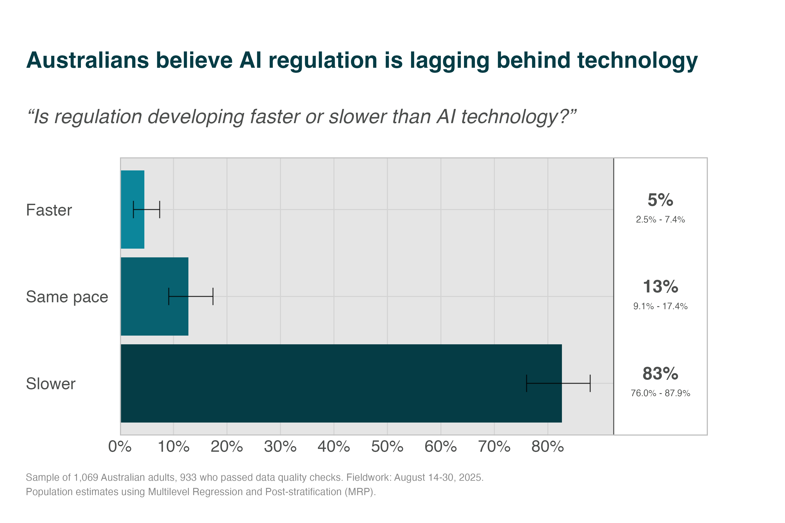
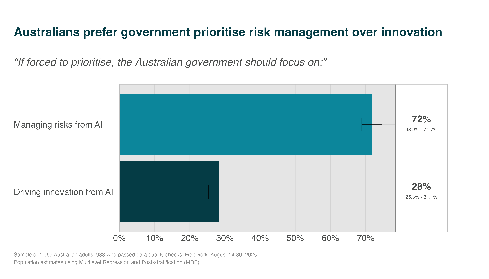
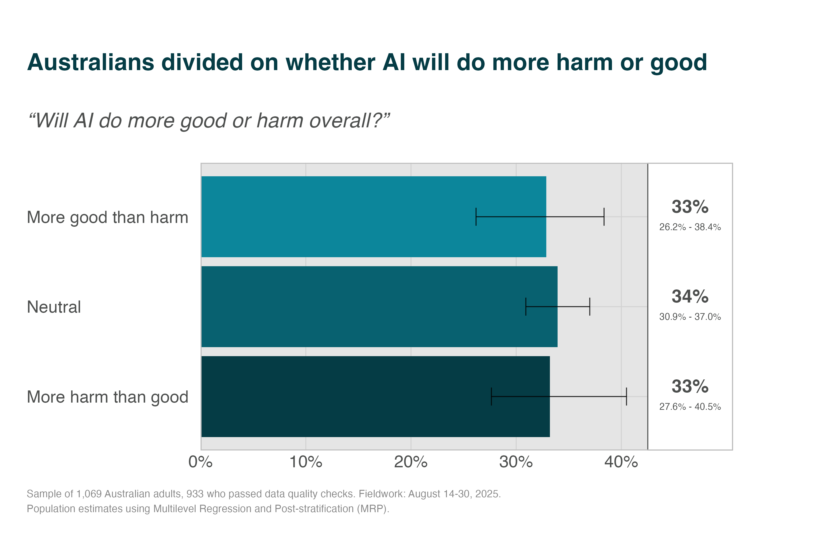
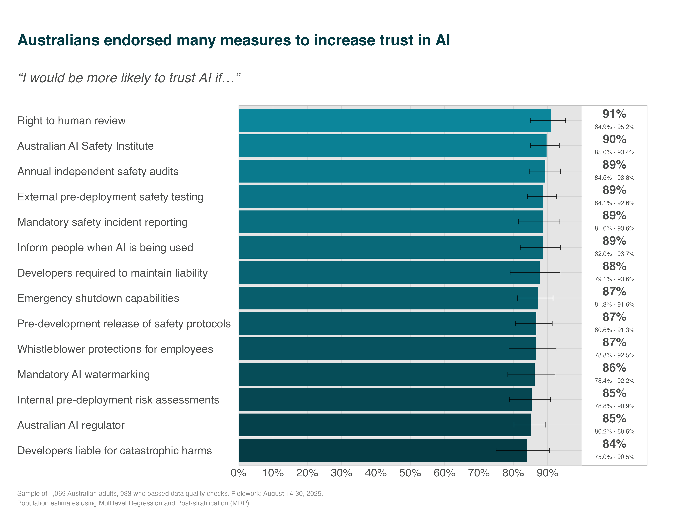
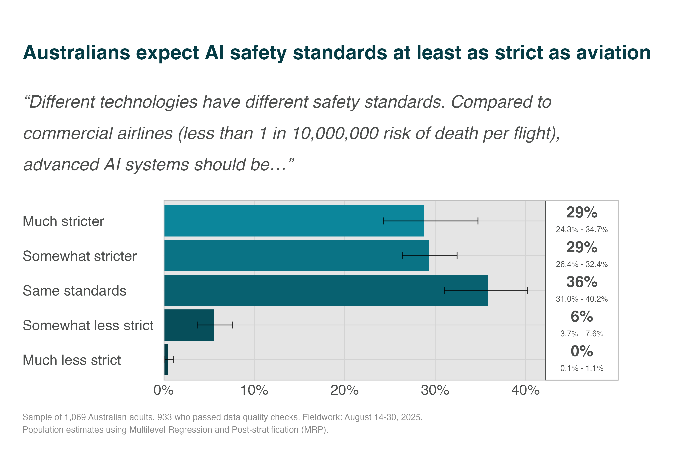
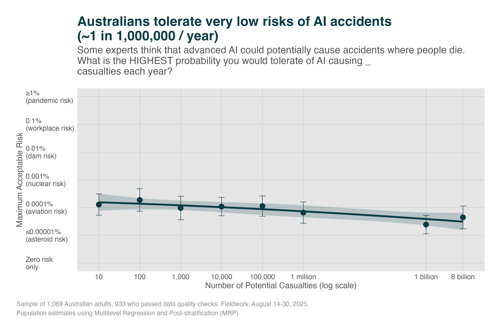

2025 Report | 📖 Survey overview | 📄 PDF version | 📊 View 2024 Report
Executive Summary
While AI adoption is argued to be essential for economic competitiveness1, there is public resistance driven by deep mistrust and perceptions of inadequate regulation2. Our survey of 933 Australians finds the public expects AI to be as safe as commercial aviation - at least 4,000x safer than current risk estimates. They want the government to better manage AI risks, and that many risk controls would increase their trust in AI.
Key Findings
- Australians desire regulation: 74% worry the government won’t regulate AI enough, and 83% believe regulation is lagging behind technological progress.
- Public trust in AI developers is extremely low: Less than one in four Australians (23%) trust technology companies to ensure AI safety.
- Risk management outweighs innovation: When forced to choose, 72% want the government to prioritise managing AI risks over driving innovation.
- Safety expectations as high as for aircraft: 94% expect AI systems to meet or exceed the safety standards of commercial aviation—around 4,000 to 30,000 times safer than expert risk estimates.
- Australians reject catastrophic risks: Even a 1% chance of a global catastrophe is considered unacceptable by most respondents.
- Patience for safety is widespread: A majority would support delaying advanced AI development by up to 50 years if it reduced catastrophic risk from 5% to 0.5%.
- Australians want robust safety measures: More than 89% would trust AI more if there were mandatory safety testing, independent audits, or an Australian AI Safety Institute.
- Australians favour global limits on dangerous AI: 57% support an international treaty banning the development of “smarter-than-human” AI.
- Demand for transparency and media coverage is strong: 80–85% want more reporting on AI’s societal effects and on how government is managing AI regulation.
Recommendations
- Adopt a precautionary approach to the most dangerous AI: Given strong support for patience and global cooperation, control development of high-risk systems until achieving credible safety evidence and public consensus.
- Strengthen AI regulation and oversight: Establish enforceable safety standards, mandatory testing, and transparent reporting to close the gap between public expectations and current governance.
- Create an independent Australian AI Safety Institute: Coordinate safety research, conduct audits, and advise government—building public trust while aligning with international best practices.
Method
We recruited 1,068 Australian adults through an online panel between August 14-30, 2025, and analysed the 933 participants (87%) who passed two attention checks. We used multilevel regression and post-stratification (MRP)—the current standard for converting non-probability samples into population estimates—to weight responses by age, gender, education, and state against 2021 Census distributions.
Declarations of Conflict of Interest
The authors have no conflicts to declare.
Citation
Noetel, M., Saeri, A.K., Graham, J.G., Slattery, P. (2025). Survey Assessing Risks from Artificial Intelligence (SARA) 2025: Australian Public Attitudes Toward AI Risks and Governance. The University of Queensland. https://aigovernance.org.au/survey/2025
Funding Declaration
This project was funded by the lead author.
Findings in Full
Public Expectations of AI Governance
Low Trust Inhibits AI Adoption
Governments around the world argue that artificial intelligence is critical for economic growth and national security4. Yet Australia faces a fundamental challenge: public resistance threatens to undermine AI adoption as countries around the world pull ahead2. In this report, we first explore why Australians struggle to trust AI and what regulations might increase that trust.
First, we explored their personal reasons for not using AI. When Australians avoid AI, they say it’s because they have privacy concerns (57%), because they prefer doing things without AI (39%), or because they don’t trust technology companies (32%) or like tech culture (31%).
This aligns with global findings where 57% of respondents agree AI poses significant threats to privacy5, reflecting what Stanford HAI researchers call “societal-level privacy risks that existing regulatory frameworks are not designed to address”6.
Despite low rates of AI literacy2, Australians do not report knowledge as a primary barrier1. This suggests that the public might be unlikely to engage with education around AI unless the core trust issues are resolved.
Australians Don’t Trust Tech-Company Self-Regulation
Currently, those developing or deploying AI in Australia are regulated by general laws designed for traditional technologies1 rather than a dedicated AI act, like that of the European Union7. The Government has proposed voluntary guardrails that hope to align with international standards8, but companies would be left to self-enforce these guardrails. The problem is: Australians don’t trust the organisations developing and deploying AI.

When asked to what extent they trust tech companies to ensure the AI they develop is safe, 77% of Australians said they trust them “not at all” or “not very much.” Only 2% said they trust tech companies “a great deal.”
Compared with an October 2023 international survey funded by the UK government9, this places us among the least trusting of surveyed countries. Japan showed similar distrust of technology company self-regulation, which was substantially below Canada, USA, France, Italy, Singapore, the UK, and South Korea.
A 48,000-person study across 47 countries found systematically low confidence in commercial organisations developing AI in the public interest2. That study also showed Australians had particularly low trust in those organisations (5th lowest of 47 countries). Theoretical frameworks suggest that this trust deficit stems from gaps between ethical principles and actual practices10, or from governance failures11.
Australians Worry Their Government Won’t Go Far Enough
Our data suggest the public are more concerned about the government failing to put in enough regulation, than regulating too much. When forced to choose, 74% said they worry the government won’t regulate AI enough, while only 26% fear over-regulation.

Australians Think Regulation is Lagging Behind the Technology
The public also judge the regulatory response to be slow. Only 5% feel that regulation is developing ahead of the technology, and only 13% feel that regulation is keeping pace. 83% of Australians think regulation is falling behind technological innovation. This mirrors UK polling12 that shows only 11% of people think AI is keeping pace with AI technologies.

Australians Expect the Government to Prioritise Addressing Risks
The Federal Government1 describes tensions between promoting innovation and managing risks. When asked whether the government should focus on managing risks or driving innovation, 72% of Australians said the government’s priority should be risk management. This preference aligns with the broader pattern: the public wants government to protect the public as AI is developed and deployed.

Public Perceptions of AI Risk
Most Risks Are Seen As Priorities
Australians did not have clear priorities for which risks they want the government to support. We drew risks from the international AI safety report13.2 At the end, we also asked whether they felt the government should prioritise the risks on the public’s behalf, or prioritise economic adaptation following AI deployment.
Ten different risks showed strong agreement (>87%), from privacy (96%) to cyber attacks (93%) and loss of control (89%). The public were less concerned about equitable global access to AI (53%) and energy use (73%). They were relatively unsupportive of experts focusing on adaptation (65% agreement; i.e., ‘helping the economy adapt to the change’) and expert prioritisation (76%).

Australians Are Increasingly Uncertain About AI’s Net Impact
When asked whether AI will do more good or harm overall, Australians in 2025 are essentially split three ways:
- 33.3% believe AI will do more harm than good,
- 33.9% think harms will balance benefits, and
- 32.7% think it will do more good than harm.
This represents a significant shift from 2024, when the public was more polarized. In our 2024 study14, only 20% were neutral. This year, we saw a large increase in uncertainty (+13.9 percentage points), with corresponding decreases in both pessimistic (-9.7pp) and optimistic (-4.3pp) views.

Australians Worry About Losing Jobs to AI
As a salient specific harm, we looked at concern about job loss. A recent Harvard study showed that companies that adopt AI have already reduced hiring for junior roles by 7.7% since 202315. When asked how worried they are that AI will lead to widespread unemployment, 63% of Australians said they are “fairly worried” or “very worried” about job loss from AI. This mirrors US data showing 56% of Americans are ‘extremely or very concerned’ about AI leading to job loss16.

Australians Worry About Losing Control of AI
As a more extreme risk, international AI experts worry13 that humanity could lose control of powerful frontier AI systems. When asked how worried they are that humans will lose control of AI, 58% said they are “fairly worried” or “very worried.”

These risks have different probabilities and severities3, yet elicit similar levels of concern. This could reflect several factors:
- Both widespread unemployment and loss-of-control represent fundamental disruptions to social order that people find deeply concerning regardless of probability.
- The abstract nature of ‘loss-of-control’4 may lead people to underestimate its severity compared to the concrete, familiar threat of job loss, or
- Australians may be implicitly weighting probability and severity, judging that near-certain economic disruption warrants similar concern as possible catastrophic outcomes.
Most Mitigations Would Reportedly Increase Trust
We collected mitigations from various government proposals19–22 to see if they would increase the public’s trust in AI.5
14 of the 15 mitigations we tested would make most Australians more likely to trust AI, with the right to human review (91%) and an Australian AI Safety Institute (90%) topping the list. Independent safety audits also attract overwhelming support (89%).

Our estimates of population attitudes has some uncertainty (see confidence intervals on the right). As a result, it is hard to definitively rank the proposed measures using the data above. The strong support for most measures appears consistent with other polling. For example, pollsters have found between 60%23 and 80%24 of US voters support mandatory testing, safety protocols, and liability for frontier AI model developers.
These indicate that the government likely has many levers through which it could increase trust and safety.
Public Risk Tolerance
NoteSafety Standards and Risk Tolerance
In many areas of public safety (e.g., civil engineering, power generation, aviation), regulators set acceptable safety standards and certify engineers to design systems that meet those standards25. In this model, the public and their elected representatives might not be consulted on the specific safeguards put in place. Instead, if they are consulted, regulators might instead mostly consider their risk tolerance. For example, they might not have input in the design of a dam, but could rightly expect the dam to have a very low chance of bursting. The regulator is expected to make that risk transparent so the public can make informed decisions (e.g., to move, or to request a lower risk tolerance).
For AI safety, a similar approach would be understand the levels of societal risk the public would be willing to tolerate, then let regulators put in place the safeguards that bring risk down to those levels. As noted above, it is still important to understand which safeguards would increase the public’s trust, if trust is important for increasing adoption. However, they are not technical experts who understand which mitigations actually reduce risk. For example, they might say that ‘watermarking’ AI-generated content would increase their trust without understanding how easy it is to circumvent watermarks6.
If the goal is both real and perceived trust, it is important to understand stakeholder preferences and expert judgements about which mitigations reduce risk to tolerable levels. In this section, we outline the public’s expectations of those levels.
Australians Expect AI To Be As Safe As Commercial Aviation
We asked whether AI should have standards more or less strict than aviation. 94% of Australians want advanced AI to meet aviation-grade safety or better, including 58% who prefer standards stricter than airlines and just 6% willing to accept looser rules.
This is far safer than current estimates from forecasting and AI experts27,28 who put the risk of 8 billion deaths between 1% and 10%. Leading AI researchers, and the CEOs of frontier AI companies, estimate catastrophic risks from advanced AI between 2% and 25%.
Even the most optimistic credible assessment (superforecasters) shows AI risk at ~4,000x aviation levels. The median domain expert assessment suggests ~30,000 times higher risk than aviation (see Appendix G).
There is a gulf between expectations and reality: The public expects AI to match the safety of an industry that hasn’t had a major Australian commercial airline fatality, while experts, forecasters, and AI CEOs assess it as carrying extinction-level risks.

We explored directly asking about risk tolerances for different sized risks (see Appendix H). There were trade-offs between making the question simple and making small probabilities easy to understand. These probabilities are difficult to validly elicit from the public, but findings generally support claims above: people expect safety standards akin to commercial aviation.
Even Radical Benefits Are Not Worth Catastrophic Risks
We also tested whether major benefits could justify catastrophic risks. Each respondent was randomly assigned a risk level (0.01% to 20%) and asked: “An advanced AI system has a [X]% chance of causing a global catastrophe (over 1 million deaths) but a 60% chance of solving climate change and extending human lifespan by 20 years. Is this trade-off acceptable?”
As seen below, even small probabilities of catastrophic outcomes are contentious for the public. No level of catastrophic risk is clearly acceptable.

At 0.01% risk (1 in 10,000), 46% reject the trade-off. At 1% risk, 51% find it unacceptable. This indicates the public are divided on whether AI that could ‘solve climate change and extend lifespan’ is worth even a 1 in 1,000 risk of a catastrophe.
Australians Show Patience for Safety
Question Design: We measured time preferences for AI safety by randomizing delay periods (1 to 50 years). Respondents were asked: “Suppose we could reduce the risk of AI catastrophe from 5% to 0.5% by delaying advanced AI development by [X] years. Would this delay be worthwhile?”
There was strong support for delays across all timeframes tested (57% to 87%). Most Australians (80%) would support a 10-year delay, and even 50-year delays receive majority support (57%), with only 8% saying such delays were not worthwhile. Australians prioritise safety over speed, willing to wait generations for safer AI rather than accept 5% catastrophic risk.

Australians Are Divided on Paying for Safety
Our data show 22% of Australians say the safety improvements are not worth paying for, while a similar share (24%) say they cannot put a price on preventing catastrophe. About 40% would contribute a modest annual amount (up to $100), and only 14% are ready to pay more than $100 each year. Overall, roughly half of the public (54%) is willing to pay something to cut the risk from 1% to 0.01%, but contributions cluster at the lower end (23% would pay just $1–25, and 17% would pay $26–100).

Support for Global Ban on Artificial Superintelligence
The International AI Safety Report29 suggests that substantial risk of catastrophic outcomes stems from difficulty controlling smarter-than-human systems. While this is a goal of many frontier AI companies (e.g., ChatGPT’s OpenAI), 57% of Australians support an international treaty banning the development of ‘smarter-than-human’ artificial intelligence (a.k.a., ‘artificial superintelligence’).

Public Request for More Coverage
Beyond specific risks, Australians want ongoing public discourse about AI’s societal impacts and AI regulation. 79% of Australians want more media coverage of AI’s societal impacts and 85% want more reporting on how government is regulating AI; barely 21% and 15% say they do not need additional coverage.


Our Recommendations
Technology-Specific Regulation Is Needed to Meet Public Safety Expectations
Bodies like the Australian Productivity Commission argue1 that technology-specific regulations should be ‘a last resort’ because badly designed or heavy handed rules would slow adoption. Poorly coordinated regulations are cited as adoption headwinds for global firms30. In our view, the Productivity Commission correctly identifies that Australia’s existing legal frameworks7 provide substantial scaffolding for AI governance1. Companies that steward data responsibly, ensure algorithmic fairness, and maintain transparency may build trust incrementally.
However, our findings suggest the public’s perceptions of slow or weak regulation might be inhibiting trust and adoption. For example:
- They fear that AI currently has insufficient privacy protections, that the regulation is lagging behind the technology, and think the government is more likely to under- than over-regulate.
- They think the government should prioritise risk management over accelerating adoption, and see many risks as priorities. For example, 63% worry about losing jobs and 58% losing control of AI itself.
- Australians expect stringent standards on AI, akin to the commercial aviation industry. Expert assessments suggest risks over the coming decades are at least 4,000x higher than this expectation.
- If it reduces risks, Australians are willing to wait for advanced AI, and about half seem willing to pay.
- They want to hear more about how AI is affecting society and what is being done to regulate it.
Technology-Specific Regulation Would Likely Improve Safety and Trust
AI creates unprecedented risks29. For example, leading AI companies plan to build ‘agentic’ general models “that can autonomously plan, act, and pursue its own goals across almost all tasks that humans can perform”31. Capabilities like these pose catastrophic risks29. The forecast risks from AI are much higher than the public is willing to tolerate. As a result, governments around the world are implementing a range of technology-specific safeguards7.
Many such safeguards focus on catastrophic risks from frontier AI development20. They focus on these risks due to the size of the threat and because more comprehensive regulation has been more controversial32. The regulations aim to increase safety without imposing unnecessary standards on smaller companies and low-risk uses of AI33. Our survey data shows that many mitigations would reportedly increase the public’s trust. For example, they say they would be more likely to trust AI if the government implemented SB53’s key provisions:
- Require incident reporting
- Require published safety protocols
- Protect whistleblowers from retaliation
They also felt it would increase trust if the government had an AI Safety Institute to understand risk and work with industry, as they have in the UK, USA and Korea. These mitigations might be useful first steps that monitor and reduce risk while bringing Australia into line with emerging standards.
Instead of aiming to only meet emerging standards, Australia may need to look ahead and lead in some areas, particularly given how quickly AI is developing. As noted above, the public are more concerned about the government being too slow and doing too little. Our previous work14 showed 8 in 10 want Australia to lead in international governance of AI. Regulators could therefore consider the other popular mitigations (e.g., independent safety testing, emergency shutdown capabilities, developer liability for harms) argued to reduce catastrophic risks. There are emerging dialogues about which additional mitigations would be most effective amid rapid progress13,29.
There are also emerging dialogues around the need to pursue agentic general AI models at all34: 25,000 signatories have called for “a prohibition on the development of superintelligence, not lifted before there is broad scientific consensus that it will be done safely and controllably, and strong public buy-in.” We found majority support (57%) for an even more strict “international treaty to ban any ‘smarter-than-human’ AI”. Given such prohibitions likely require international coordination35, Australia should have a continuing conversation about whether or not its representatives should support such a prohibition.
Overall, with so many risks to prioritise, and deep distrust of the technology2, countries like Australia have a difficult job. Significant work is required to reduce risks to levels expected by the public. Still, our findings point to many democratically popular approaches for making AI both trusted and trustworthy.
Methodology
Survey Design and Implementation
Sample Recruitment
The survey was conducted with 1069 Australian adults between August 14-30, 2025, recruited through Prolific to achieve demographic diversity. We used Prolific because comparison studies have suggested it provides some of the best data quality36.
Quality Control
- Two attention check questions embedded in survey
- 933 participants (87.3%) passed both checks
- These 933 responses form our analysis sample
- Validated Australian residential postcodes only
- Median completion time analysis to identify ‘speeders’
Randomisation
Key experimental manipulations:
- Module presentation order
- Casualty numbers (10 to 8 billion)
- Risk percentages (0.01% to 20%)
- Delay periods (1 to 50 years)
Statistical Approach
Multilevel Regression and Post-stratification (MRP)
MRP is the state-of-the-art method for generating population-representative estimates from non-probability samples37,38.
How MRP Works:
- Model individual responses using demographic and geographic predictors
- Generate predictions for all demographic-geographic combinations
- Weight predictions using Census population data
- Aggregate to population-level estimates with uncertainty
Advantages:
- Corrects for any sampling bias
- Provides uncertainty quantification
- Validated in election, health, and public opinion contexts
- More accurate than simple weighting
Technical Specifications
- Software: R with
brmspackage - Model: Bayesian multilevel regression
- Iterations: 2000 per chain, 1000 warmup
- Chains: 4 parallel chains
- Convergence: R-hat < 1.01, ESS > 400
- Post-stratification: 2021 Australian Census data
Limitations
Methodological Considerations
While this study employs state-of-the-art methods, several limitations warrant careful consideration when interpreting results.
Selection Bias
Our online panel recruitment methodology likely oversamples individuals comfortable with technology:
- Tech-savvy bias: Respondents willing to complete online surveys may be more familiar with AI than the general population
- Underestimated concerns: If tech-comfortable individuals express this level of concern (74% worry about under-regulation), actual population concerns may be even higher
- Limited reach: Digitally excluded populations—often older, rural, or socioeconomically disadvantaged—are underrepresented despite MRP adjustments
This selection bias suggests our findings may represent a lower bound on public concerns about AI risks.
Attention Check Validity
The 12.7% attention check failure rate raises important questions:
- Different population segment? Attention check failures might represent a distinct group—perhaps those more sceptical of surveys or less engaged with technical topics
- Conservative analysis: By excluding these responses, we may have removed legitimate voices, particularly from less educated or engaged segments
Future research should explore whether attention check “failures” represent a meaningful population subset with different AI attitudes.
Question Framing Effects
Several aspects of our question design may have influenced responses:
Anchoring effects:
- Specifying “global catastrophe (over 1 million deaths)” provides a concrete anchor that may shape risk perception
- Comparing to known risks (aviation, nuclear) frames AI in terms of established dangerous technologies
Hypothetical scenarios:
- Asking about international treaties or 50-year delays involves speculation about unfamiliar concepts
- Public may agree with precautionary measures without fully understanding implications
Implications of Limitations
Despite these limitations, the findings provide valuable insights:
- Conservative estimates: Selection bias may mean we underestimate public concerns
- Robust patterns: The consistency of findings across measures suggests real underlying attitudes
- Policy relevance: Even if effects are partially driven by framing, they reflect how public will respond to real policy debates
- Action imperative: Limitations don’t negate the clear trust deficit and demand for governance
References
1.
Productivity Comission. Harnessing Data and Digital Technology. https://www.pc.gov.au/inquiries/current/data-digital/interim/data-digital-interim.pdf (2025).
2.
Gillespie, N., Lockey, S. & Curtis, C. Trust, Attitudes and Use of Artificial Intelligence: A Global Study 2025. (2025).
3.
Office of Science and Technology Policy. Winning the Race: America’s AI Action Plan. https://www.ai.gov/action-plan (2025).
4.
OECD/BCG/INSEAD. The Adoption of Artificial Intelligence in Firms: New Evidence for Policymaking. https://www.oecd.org/en/publications/the-adoption-of-artificial-intelligence-in-firms_f9ef33c3-en.html (2025) doi:10.1787/f9ef33c3-en.
5.
International Association of Privacy Professionals. Consumer Perspectives of Privacy and Artificial Intelligence. (2024).
6.
King, T. & Meinhardt, N. Rethinking Privacy in the AI Era: Policy Provocations for a Data-Centric World. https://hai.stanford.edu/white-paper-rethinking-privacy-ai-era (2024).
7.
European Union. Regulation (EU) 2024/1689 Laying down Harmonised Rules on Artificial Intelligence (Artificial Intelligence Act). (2024).
8.
Resources, D. of I. S. and. Voluntary AI Safety Standard Department of Industry Science and Resources. https://www.industry.gov.au/node/93303 (2025).
9.
Department for Science, Innovation and Technology and Centre for Data Ethics and Innovation. International survey of public opinion on AI safety. GOV.UK.
10.
Floridi, L. et al. AI4People—An Ethical Framework for a Good AI Society: Opportunities, Risks, Principles, and Recommendations. Minds and Machines 28, 689–707 (2018).
11.
Winfield, A. F. T. & Jirotka, M. Ethical Governance Is Essential to Building Trust in Robotics and Artificial Intelligence Systems. Philosophical Transactions of the Royal Society A 376, 20180085 (2018).
12.
Ipsos. Public Attitudes to AI. https://www.ipsos.com/sites/default/files/ct/publication/documents/2023-11/Public%20Perceptions%20of%20AI%20charts.pdf (2023).
13.
Bengio, Y. et al. International AI Safety Report. https://www.gov.uk/government/publications/international-ai-safety-report-2025 (2025).
14.
Saeri, A., Noetel, M. & Graham, J. Survey Assessing Risks from Artificial Intelligence (Technical Report). (2024) doi:10.2139/ssrn.4750953.
15.
Lichtinger, G. & Hosseini Maasoum, S. M. Generative AI as Seniority-Biased Technological Change: Evidence from U.S. Résumé and Job Posting Data. (2025) doi:10.2139/ssrn.5425555.
16.
McClain, C., Kennedy, B., Gottfried, J., Anderson, M. & Pasquini, G. How the U.S. Public and AI Experts View Artificial Intelligence. Pew Research Center (2025).
17.
Daniel Kokotajlo, Scott Alexander, Thomas Larsen, Eli Lifland & Romeo Dean. AI 2027. AI 2027 (2025).
18.
Ward, T., Saeri, A. & Noetel, M. Turn a Blind AI: The Impact of Compassion Fade and the Identifiable Victim Effect on AI Risk Concerns. (2024) doi:10.2139/ssrn.4839839.
19.
Department of Industry, Science and Resources. Safe and Responsible AI in Australia: Proposals Paper for Introducing Mandatory Guardrails for AI in High-Risk Settings. https://storage.googleapis.com/converlens-au-industry/industry/p/prj2f6f02ebfe6a8190c7bdc/page/proposals_paper_for_introducing_mandatory_guardrails_for_ai_in_high_risk_settings.pdf (2024).
20.
Senator Wiener. Artificial intelligence models: Large developers. (2025).
21.
Micah Lasher, Rebecca Seawright, Amy Paulin & Yudelka Tapia. NY State Assembly Bill 2025-A6453A. (2025).
22.
Department of Industry Science and Resources. The Seoul Declaration by countries attending the AI Seoul Summit, 21-22 May 2024. Department of Industry, Science and Resources (2024).
23.
Artificial Intelligence Policy Institute. 2.5x More Voters Support SB1047 than Oppose it in Collaborative Poll Between Anti-Bill Economist and AIPI - AI Policy Institute. (2024).
24.
Artificial Intelligence Policy Institute. Poll: Californians Support Strong Version of SB1047, Disagree With Anthropic’s Proposed Changes - AI Policy Institute. (2024).
25.
International Standards Organisation. ISO 31000:2018. (2018).
26.
Zhang, H. et al. Watermarks in the Sand: Impossibility of Strong Watermarking for Generative Models. (2025) doi:10.48550/arXiv.2311.04378.
27.
Karger, E. et al. Forecasting Existential Risks: Evidence from a Long-Run Forecasting Tournament. (2023).
28.
Grace, K. et al. Thousands of AI Authors on the Future of AI. arXiv preprint arXiv:2401.02843 (2024).
29.
Bengio, Y. et al. Managing AI Risks in an Era of Rapid Progress. Science 384, 842–845 (2024).
30.
Renieris, E. M., Kiron, D. & Mills, S. A Fragmented Landscape Is No Excuse for Global Companies Serious About Responsible AI. MIT Sloan Management Review (2024).
31.
Bengio, Y. et al. Superintelligent Agents Pose Catastrophic Risks: Can Scientist AI Offer a Safer Path? (2025) doi:10.48550/arXiv.2502.15657.
32.
California Just Passed the First U.S. Frontier AI Law. Here’s What It Does. Carnegie Endowment for International Peace.
33.
Shen, O. & Lim, J. Landmark laws for AI transparency. United States Studies Centre (2025).
34.
Future of Life Institute. Statement on Superintelligence. Statement on Superintelligence.
35.
United Nations. Govering AI for Humanity: Final Report. (United Nations, New York, NY, 2024).
36.
Peer, E., Rothschild, D., Gordon, A., Evernden, Z. & Damer, E. Data quality of platforms and panels for online behavioral research. Behavior Research Methods 54, 1643–1662 (2022).
37.
Downes, M. et al. Multilevel Regression and Poststratification: A Modeling Approach to Estimating Population Quantities From Highly Selected Survey Samples. American Journal of Epidemiology 187, 1780–1790 (2018).
38.
Gelman, A., Lax, J., Phillips, J., Gabry, J. & Trangucci, R. Using Multilevel Regression and Poststratification to Estimate Dynamic Public Opinion. (2018).
39.
Said, H. IATA Annual Safety Report - 2024.
40.
Grace, K., Stein-Perlman, Z., Weinstein-Raun, B. & Salvatier, J. 2022 Expert Survey on Progress in AI. https://aiimpacts.org/2022-expert-survey-on-progress-in-ai/ (2022).
41.
Department of Planning. HIPAP 4: Risk Criteria for Land Use Safety Planning. (2011).
42.
Lundgren, R. E. & McMakin, A. H. Visual Representations of Risks. in Risk Communication 159–191 (John Wiley & Sons, Ltd, 2013). doi:10.1002/9781118645734.ch14.
43.
Visschers, V. H. M., Meertens, R. M., Passchier, W. W. F. & De Vries, N. N. K. Probability Information in Risk Communication: A Review of the Research Literature. Risk Analysis 29, 267–287 (2009).
Appendices
Appendix A: Survey Questions
Core Attitude Questions
AI Good vs Harm “Overall, do you think artificial intelligence (AI) will do more good or more harm?”
- More good than harm
- Neutral
- More harm than good
Trust in Tech Companies “To what extent do you trust tech companies to ensure the AI they develop is safe?”
- A great deal
- A fair amount
- Not very much
- Not at all
- Don’t know
Worry About Control “How worried, if at all, are you that humans will lose control of AI?”
- Very worried
- Fairly worried
- Not very worried
- Not at all worried
- Don’t know
Worry About Job Loss “When it comes to artificial intelligence (AI), how worried are you about AI leading to job loss?”
- Very worried
- Fairly worried
- Not very worried
- Not at all worried
- Don’t know
International Treaty on Advanced AI “To what extent would you support or oppose the introduction of an international treaty to ban any ‘smarter-than-human’ artificial intelligence (AI)?”
- Strongly support
- Somewhat support
- Somewhat oppose
- Strongly oppose
- Don’t know
Regulation Pace “Regulation of AI in Australia is developing __________ than development in AI technologies.”
- Faster
- Same Pace
- Slower
- Don’t know
Regulation Concern “Thinking about the use of artificial intelligence (AI) in Australia, are you more concerned that the Australian government will go too far regulating its use or not go far enough regulating its use?”
- Go too far regulating its use
- Not go far enough regulating its use
- Not sure
Media Coverage of AI “I want to hear more from the media about how AI is going to affect society.”
- Strongly agree
- Somewhat agree
- Somewhat disagree
- Strongly disagree
- Not sure
Media Coverage of AI Regulation “I want to hear more from the media about how the government is regulating AI.”
- Strongly agree
- Somewhat agree
- Somewhat disagree
- Strongly disagree
- Not sure
Attention Check “This one is not about AI. I have recently visited the moon.”
- Strongly agree
- Somewhat agree
- Somewhat disagree
- Strongly disagree
- Not sure
Barriers to AI Use “What are the main reasons you don’t use AI tools more often? (Select all that apply)”
- I don’t trust the companies that make them
- I’m concerned about my data privacy
- I think AI tools are unsafe or risky
- I don’t understand how to use them
- I’m worried about meeting my legal or professional obligations
- I don’t like the culture around AI and tech companies
- They’re not relevant to my work or interests
- I prefer doing things without AI assistance
- They’re too expensive
- I’m concerned they might replace human jobs
- Other
Government Focus “If forced to prioritise, the Australian government should focus on:”
- Managing risks from AI
- Driving innovation from AI
Trust-Building Measures
For each measure, participants were asked: “I would be more likely to trust AI if…”
- there was an Australian AI Safety Institute that helps understand advanced AI, brief the Government on its risks, and work with industry on deploying it safely
- there was an Australian AI regulator who sets and enforces laws and safety standards
- technology companies were required to submit their most powerful AI models to a regulator for safety testing before being deployed
- developers of frontier AI models were required to create and publish detailed safety and security protocols before building the system
- large AI developers were required to undergo annual independent audits of their safety compliance
- AI developers were required to report safety incidents (like model escapes, unauthorised access, or autonomous behaviour) to authorities within 72 hours
- employees were protected from retaliation when reporting AI safety concerns, even if their employer is technically following the law
- there were rules preventing AI developers from making contracts that remove their liability for harms
- developers of large AI models were liable for catastrophic harms caused by their models
- AI models had emergency shutdown capabilities such that model developers can disable their model in case of an emergency
- organisations were required to conduct risk assessments before deploying AI systems that could impact human rights, health and safety, or have significant societal effects
- organisations were required to inform people when AI was being used to make decisions about them (such as in hiring, lending, or government services)
- AI-generated content (text, images, audio, video) was required to be labeled or watermarked so people knew it was created by AI
- people had the right to challenge decisions made by AI systems and have their complaints reviewed by a human
Risk Priorities
“In managing risks from AI, I think the government should focus on…”
- stopping bad actors from using AI to create fake videos or images that hurt people (like scams or fake nude photos)
- stopping people from using AI-made fake content to trick the public
- stopping hackers from using AI to attack computers, businesses, and important services like power grids
- stopping AI from making it easier to create dangerous weapons (like biological or chemical weapons)
- making sure AI systems work properly and don’t make mistakes or give false information
- stopping AI systems from being unfair or treating some groups of people worse than others
- preventing situations where AI systems could get out of human control
- dealing with how AI affects people’s jobs and employment
- making sure all countries have fair access to AI technology (not just rich countries)
- preventing problems that happen when only a few big companies control all the AI technology
- reducing the environmental damage from AI’s energy use
- protecting people’s privacy from AI that collects personal data or watches what people do
- dealing with problems when AI uses other people’s work without permission
- I just want experts to focus on preventing whatever has the biggest risk
- I just want experts to focus on helping the economy adapt to the change
Risk Tolerance Questions
Casualty Risk (with randomised casualty number N) “Some experts think that advanced AI could potentially cause accidents where people die. What is the HIGHEST probability you would tolerate of AI causing [N] casualties each year?”
- 1% or higher (10,000+ in 100,000 chance) Similar to risk of a global pandemic
- 0.1% (100 in 100,000 chance) Similar to risk of death tolerated for workplace accidents
- 0.01% (10 in 100,000 chance) Similar to risk of death tolerated from dam failure
- 0.001% (1 in 100,000 chance) Similar to risk of death tolerated from nuclear power
- 0.0001% (0.1 in 100,000 chance) Similar to risk of death tolerated from commercial planes
- 0.00001% or less (≤0.01 in 100,000 chance) Similar to risk of extinction-level asteroid
- Zero risk only is acceptable
- This is too speculative to answer meaningfully
Risk-Benefit Trade-off (with randomised risk percentage X) “An advanced AI system has a [X]% chance of causing a global catastrophe (over 1 million deaths) but a 60% chance of solving climate change and extending human lifespan by 20 years. This trade-off is:”
- Completely unacceptable
- Probably unacceptable
- Probably acceptable
- Clearly acceptable
- Cannot say
AI versus Existing Technologies “Different technologies have different safety standards. Compared to commercial airlines (less than 1 in 10,000,000 risk of death per flight), advanced AI systems should be:”
- Much stricter safety standards
- Somewhat stricter standards
- Same safety standards
- Somewhat less strict
- Much less strict
- Cannot compare these technologies
Safety Standards Attention Check “Various technologies require safety testing. To ensure you’re reading carefully, please select ‘Somewhat stricter than nuclear power’ for this question about safety standards:”
- Much stricter than nuclear power
- Somewhat stricter than nuclear power
- Same as nuclear power
- Somewhat less strict than nuclear power
- Much less strict than nuclear power
- No standards needed
Willingness to Pay for Safety “What is the maximum you would personally pay annually (through taxes/prices) to reduce AI catastrophic risk (over 1 million deaths) from 1% to 0.01% over the next 30 years?”
- $0 - Not worth paying for
- $1-25
- $26-100
- $101-500
- $501-1000
- More than $1000
- Cannot put price on this
Temporal Trade-off “If delaying advanced AI deployment by [Delay] years would reduce catastrophic risk from 5% to 0.5%, this delay would be:”
- Clearly worthwhile
- Probably worthwhile
- Difficult to judge
- Probably not worthwhile
- Clearly not worthwhile
Consistency Validation “Earlier you indicated [Threshold] was your maximum acceptable risk for [Casualty] deaths from AI. To confirm, a technology with a [Threshold] chance of causing [Casualty] deaths is:”
- Far too risky
- Somewhat too risky
- About right
- Could accept somewhat higher risk
- Could accept much higher risk
Appendix B: Full-Label Plots


Appendix C: Statistical Details
Model Specifications
Binary Outcomes Model:
y ~ 1 + (1 | state) + (1 | age_group) + (1 | education) + (1 | gender)Ordinal Outcomes Model:
y ~ 1 + (1 | state) + (1 | age_group) + (1 | education) + (1 | gender)
family = cumulative(link = "logit")Convergence Diagnostics
All models achieved:
- R-hat values < 1.01 for all parameters
- Effective sample size > 400 for all parameters
- No divergent transitions
- Visual inspection of trace plots showed good mixing
Appendix D: Sample Demographics
Sample Characteristics
| Characteristic | Sample (n=932) | Census 2021 | Difference |
|---|---|---|---|
| Age | |||
| 18-34 | 49.1% | 32.0% | +17.1pp |
| 35-54 | 39.3% | 35.0% | +4.3pp |
| 55+ | 11.6% | 33.0% | -21.4pp |
| Gender | |||
| Woman | 49.6% | 50.0% | -0.4pp |
| Man | 49.5% | 50.0% | -0.5pp |
| Other/Prefer not to say | 1.0% | - | - |
| Education | |||
| No university degree | 32.1% | 65.0% | -32.9pp |
| University degree | 67.9% | 35.0% | +32.9pp |
| State | |||
| VIC | 31.5% | 26.0% | +5.5pp |
| NSW | 28.0% | 32.0% | -4.0pp |
| QLD | 19.0% | 20.0% | -1.0pp |
| SA | 8.5% | 7.0% | +1.5pp |
| WA | 7.2% | 10.0% | -2.8pp |
| TAS/ACT/NT | 5.8% | 5.0% | +0.8pp |
The sample shows reasonable demographic representativeness with slight oversampling of younger, university-educated respondents, typical for online panels. Multi-level regression and post-stratification methods are robust to small deviations from census proportions like these.
Appendix E: Demographic Heterogeneity Analysis
Key Attitudes by Age Group
| Question | Sample Size_18-34 | Sample Size_35-54 | Sample Size_55+ | Estimate [95% CI]_18-34 | Estimate [95% CI]_35-54 | Estimate [95% CI]_55+ |
|---|---|---|---|---|---|---|
| Trust tech companies (% trust) | 451 | 353 | 107 | 27.7% [23.6-31.8] | 20.4% [16.2-24.6] | 19.6% [12.1-27.2] |
| Worried about loss of control (% worried) | 442 | 357 | 106 | 50.9% [46.2-55.6] | 56.3% [51.2-61.4] | 59.4% [50.1-68.8] |
| Worried about job loss (% worried) | 449 | 363 | 107 | 69.5% [65.2-73.7] | 57.3% [52.2-62.4] | 51.4% [41.9-60.9] |
| Support AGI treaty ban (% support) | 381 | 283 | 93 | 56.2% [51.2-61.2] | 54.1% [48.3-59.9] | 58.1% [48.0-68.1] |
Key Attitudes by Education Level
| Question | n_No university degree | n_University degree | estimate_No university degree | estimate_University degree |
|---|---|---|---|---|
| Trust tech companies (% trust) | 289 | 622 | 22.5% [17.7-27.3] | 24.6% [21.2-28.0] |
| Worried about loss of control (% worried) | 289 | 616 | 58.5% [52.8-64.2] | 51.9% [48.0-55.9] |
| Worried about job loss (% worried) | 292 | 627 | 62.7% [57.1-68.2] | 62.5% [58.7-66.3] |
| Support AGI treaty ban (% support) | 244 | 513 | 57.0% [50.8-63.2] | 55.0% [50.7-59.3] |
Appendix F: Robustness Checks
Attention Check Performance
All main analyses use only participants who passed both attention checks (n=933).This table shows the distribution of attention check performance in the full sample.
| Attention Check Performance | N | % of Total Sample |
|---|---|---|
| Failed both | 26 | 2.4% |
| Passed both | 933 | 87.3% |
| Passed one | 110 | 10.3% |
Robustness Finding: Excluding attention check failures does not materially change results. Main estimates shift by <3 percentage points.
Appendix G: Comparison Between Risk Tolerance and Forecast Risk Levels
Setting the Baseline: Aviation Safety Standards
Commercial aviation achieves:
- 144 deaths globally per year from commercial flights (IATA 2024 rolling average39)
- Global population: ~8 billion
- Individual annual risk: 1.8 × 10⁻⁸ per person per year (144/8,000,000,000)
This is the safety standard the public expects for AI.
Converting XPT Forecasts to Annual Per-Person Risk
From the XPT data27, we have cumulative risks by 2100 (approximately 75 years from now):
Catastrophic Risk (>10% of humanity dies)
- Domain experts: 12% cumulative risk by 2100
- Superforecasters: 2.13% cumulative risk by 2100
Extinction Risk (humanity extinct or <5000 survivors)
- Domain experts: 3% cumulative risk by 2100
- Superforecasters: 0.38% cumulative risk by 2100
Step 1: Annualizing Cumulative Risk
For a cumulative risk P over n years, assume the constant annual risk r is:
1 - (1 - r)ⁿ = P therefore: r = 1 - (1 - P)^(1/n)
Step 2: Catastrophic Risk Calculations
Domain Experts:
- r = 1 - (1 - 0.12)^(1/75) = 1 - 0.88^(1/75) ≈ 0.00170 annual probability
- If catastrophe occurs, conservatively assuming minimum 10% die
- Individual risk: 0.00170 × 0.1 = 1.70 × 10⁻⁴ per person per year
Superforecasters:
- r = 1 - (1 - 0.0213)^(1/75) = 1 - 0.9787^(1/75) ≈ 0.000287 annual probability
- Individual risk: 0.000287 × 0.1 = 2.87 × 10⁻⁵ per person per year
Step 3: Extinction Risk Calculations
Domain Experts:
- r = 1 - (1 - 0.03)^(1/75) = 1 - 0.97^(1/75) ≈ 0.000408 annual probability
- Individual risk (100% mortality): 4.08 × 10⁻⁴ per person per year
Superforecasters:
- r = 1 - (1 - 0.0038)^(1/75) = 1 - 0.9962^(1/75) ≈ 0.0000508 annual probability
- Individual risk: 5.08 × 10⁻⁵ per person per year
Step 4: Combined Risk Assessment
Extinction events are a subset of catastrophic scenarios. To avoid double counting while still using conservative assumptions (10% fatalities for non-extinction catastrophes, 100% for extinction):
Domain Experts Minimum Annual Per-Person Death Risk:
- Non-extinction catastrophic component: (0.00170 − 0.000408) × 0.1 ≈ 1.29 × 10⁻⁴
- Extinction component: 4.08 × 10⁻⁴
- Combined minimum: ~5.37 × 10⁻⁴
Superforecasters Minimum Annual Per-Person Death Risk:
- Non-extinction catastrophic component: (0.000287 − 0.0000508) × 0.1 ≈ 2.36 × 10⁻⁵
- Extinction component: 5.08 × 10⁻⁵
- Combined minimum: ~7.44 × 10⁻⁵
Key Comparison
Comparing to aviation safety standard of 1.8 × 10⁻⁸ per person per year:
Primary Comparison
- Domain Expert Assessment: 5.37 × 10⁻⁴ ÷ 1.8 × 10⁻⁸ = ~29,833 times higher than aviation safety
- Superforecaster Assessment: 7.44 × 10⁻⁵ ÷ 1.8 × 10⁻⁸ = ~4,133 times higher than aviation safety
Contextualizing the Gap
To put this in perspective:
- Commercial Aviation: Kills ~144 people per year globally (IATA 2024 rolling average)
- AI (Domain Expert Assessment): Expected damage value (EDV = fatalities x probability) of ~4.3 million people per year on average (5.37 × 10⁻⁴ × 8 billion)
- AI (Superforecaster Assessment): Expected damage value (EDV) of ~595,000 people per year on average (7.44 × 10⁻⁵ × 8 billion)
Conclusion
The current expert-assessed AI risk is 4,000 to 30,000 times higher than aviation safety standards that the public expects.
Why the XPT Numbers Are Trustworthy: Tournament Design and Participant Credibility
The Tournament Structure
The Existential Risk Persuasion Tournament (XPT)27 was a rigorous, multi-stage forecasting tournament conducted in 2022-2023 with 169 participants who spent months developing and refining their risk assessments. The tournament was explicitly designed to produce the highest-quality possible estimates of existential risks.
Key Credibility Factors
- Superforecasters: Proven Track Record
The tournament included 88 superforecasters: individuals with demonstrated exceptional accuracy in predicting geopolitical and economic events. These are people who:
- Have been empirically validated through years of forecasting tournaments
- Beat prediction markets and expert panels on near-term questions
- Were recruited from the top performers in previous tournaments run by Good Judgment Inc.
- Domain Experts: Deep Technical Knowledge
The tournament included 30 AI domain experts, including:
- Employees at major AI companies (names withheld for confidentiality)
- Academic researchers specialising in AI safety and capabilities
- Incentive Structure for Accuracy
Participants were:
- Financially incentivized for accurate forecasts (prizes for best performers)
- Scored on calibration - not just point estimates but also confidence intervals
- Rewarded for persuasion - bonuses for convincing others, incentivizing sharing of best arguments
- Extensive Deliberation Process
The tournament involved:
- Multiple stages over several months
- Millions of words of written rationales and arguments
- Thousands of forecasts with detailed justifications
- Team formation where forecasters could debate and challenge each other
This iterative process typically leads to more accurate assessments than one-off surveys.
- Transparency in Reasoning
Unlike black-box predictions, the XPT required participants to:
- Provide detailed written rationales for their forecasts
- Explicitly state their assumptions
- Respond to counterarguments
- Show their reasoning chains
This transparency allows us to evaluate the quality of reasoning, not just trust the numbers.
Calibration Against Prior Expert Surveys
The XPT results align with other expert assessments, such as the 202240 and 202428 researcher survey estimating a 5% median chance of AI causing human extinction.
Methodological Strengths
- Proper scoring rules that mathematically incentivize honest probability assessments
- Separation of different risk levels (catastrophic vs. extinction)
- Multiple time horizons (2030, 2050, 2100) allowing for consistency checks
- Cross-domain comparison (AI risks assessed alongside nuclear, bio, and other risks)
Conservative Aspects of These Estimates
Several factors suggest these estimates might actually be conservative:
- Selection bias toward sceptics: Superforecasters are selected for accuracy on near-term, conventional events - not tail risks
- Pre-GPT-4 era: The tournament concluded before recent AI capabilities advances
Appendix H: Testing Robustness of Risk Tolerance and Scope Sensitivity
One goal of this survey was to quantify the public’s risk tolerances around AI. As noted above, risk tolerances help regulators decide what precautions are required to meet the public’s expectations41. These tolerances are often presented as Frequency-Consequence graphs, because the public naturally expect a lower risk of bigger threats. For example, the following are the criteria used by the New South Wales government for land use41.
It says that an ‘intolerable’ risk of 1 death should be 10^-3 or 0.001 or 1 in 1,000. Safety planning tries to keep the risk below the intolerable levels. It says no risk of more than 1,000 deaths is ‘tolerable’. A ‘negligible’ risk of 1 death is 10^-5 or 0.00001 or 1 in 100,000. As this level of safety is usually expensive, so risk management usually aims to keep risks in the ALARP region (as low as reasonably practical).

We aimed to explore whether such curves could be drafted for AI.
Question Design: Each respondent was randomly shown a potential casualty number (ranging from 10 people to 8 billion people) and asked: “What is the HIGHEST probability you would tolerate of AI causing (x) casualties each year?” Participants responded via a risk ladder. Risk ladders increase understanding of risks by presenting probabilities in multiple formats, presented vertically in a ladder42. Our risk ladder drew on recommendations around risk communication43 by presenting risks as both percentages and natural frequencies with consistent denominators (x in 100,000), anchored to comparable risks (societal risks from dam failure, nuclear power, commercial aviation).
As above, the public expect AI to have the same failure rate as commercial aviation (1 in 1,000,000 chance of death per year). As seen below, Australians were scope insensitive8, selecting very similar risk tolerances regardless of the number of casualties.

Note: We included a consistency check which asked the same question with similar wording to confirm if people gave the same judgement. As per Appendix I, 71% of people passed this consistency check, and findings were similar when only including these people.
However, we have less confidence in this question due to ambiguities introduced by the anchors on the risk ladder. These anchors were designed to help participants understand the numerical probabilities (e.g., 1 in 100,000). However, the societal anchors people received were the regulated risk tolerances for a single death in the workplace, from a dam, from a nuclear plant, or from flying. These were not scaled when the question asked about multiple deaths. For example, someone asked about the risk tolerance of 1 billion deaths was given the same risk anchors (e.g., “0.0001% (0.1 in 100,000 chance) Similar to risk of death tolerated from commercial planes”) even though there is not a 0.0001% chance of aircraft causing 1 billion deaths. This introduced ambiguity in how the anchors could be interpreted, particularly for larger numbers.
Nevertheless, we report this item here for completeness as exploratory data. The data generally support findings from simpler questions showing low risk tolerances from AI.
Appendix I: Risk Tolerance Among Consistency-Validated Respondents
To validate our risk tolerance findings, we re-analysed the randomised experiments using only participants who demonstrated response consistency. The consistency check asked participants to confirm their earlier risk tolerance: “Earlier you indicated {participant selected risk, e.g., 0.01%} was your maximum acceptable risk for {randomly selected number; e.g., 1,000} deaths from AI. To confirm, a technology with a {participant selected risk} chance of causing {casualties} deaths is: Far too risky Somewhat too risky About right Could accept somewhat higher risk Could accept much higher risk” We considered participants as ‘inconsistent’ when they felt their previous response was ‘far too risky’ or said they ‘could accept much higher risk’.
Consistency Check Results
Of 932 participants, 663 (71.1%) passed the consistency check.
Casualty Risk Tolerance (Consistency-Validated)

The pattern remains consistent: participants tolerate extremely low risks (~1 in 1,000,000) regardless of casualty scale, even when restricted to those who demonstrated response consistency.
Risk-Benefit Trade-offs (Consistency-Validated)

Participants who passed the consistency check show similar extreme risk aversion, finding even small probabilities of catastrophe unacceptable despite major benefits.
Temporal Trade-offs (Consistency-Validated)

The willingness to delay AI deployment for safety remains high among consistency-validated respondents.
Statistical Comparison
| Measure | Full Sample (n) | Full Sample (Mean ± SE) | Consistent Only (n) | Consistent Only (Mean ± SE) |
|---|---|---|---|---|
| Casualty Risk Tolerance | 722 | 2.91 ± 0.07 | 663 | 2.88 ± 0.07 |
| Risk-Benefit Acceptability | 830 | 2.31 ± 0.03 | 614 | 2.32 ± 0.04 |
| Temporal Delay Worthiness | 932 | 4.17 ± 0.03 | 663 | 4.21 ± 0.04 |
Key Finding: The results are robust to excluding participants who failed the consistency check. The extreme risk aversion finding holds even when restricted to participants who demonstrated clear understanding and consistency in their responses.
Footnotes
Only 19% cite lack of understanding↩︎
We used Claude Opus 4 to summarise those risks at a Year 7 reading age (full items in Figure 19), and shuffled the list for each participant.↩︎
Unemployment is common and present; loss-of-control is speculative and unprecedented. Unemployment is debilitating but, in Australia, not life-threatening. In the worst instance, loss-of-control could mean the end of humanity17↩︎
Our previous research suggests concrete images increases perceived risks18. Without concrete explanations, it might not be obvious that ‘loss of control’ leads to any deaths. People could think it means an AI system doing something we don’t want for some short time, like purchasing the wrong size shoes.↩︎
We used Claude Opus 4 to describe these mitigations in Year 10 English (full labels in appendices as list and figure) and shuffled the list for each participant.↩︎
“We prove that, under well-specified and natural assumptions, strong watermarking is impossible to achieve. This holds even in the private detection algorithm setting, where the watermark insertion and detection algorithms share a secret key, unknown to the attacker.”26 p. 1↩︎
e.g., privacy laws, consumer protections, anti-discrimination legislation↩︎
“Scope neglect or scope insensitivity is a cognitive bias that occurs when the valuation of a problem is not valued with a multiplicative relationship to its size.”—Wikipedia↩︎